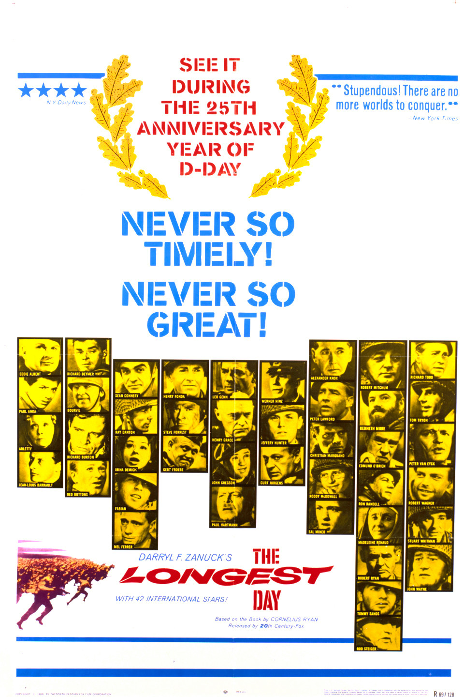

The Longest Day
35th Academy Awards
(Oscars 1963)
5 Nominations, 2 Awards
| Nominations | ||
|---|---|---|
| Category | Nominees | Result |
| Best Picture | Darryl F. Zanuck | Nominated |
| Cinematography (Black-and-White) | Henri Persin*, Jean Bourgoin, and Walter Wottitz | Won |
| Film Editing | Samuel E. Beetley | Nominated |
| Art Direction (Black-and-White) | Gabriel Bechir, Leon Barsacq, Ted Haworth, and Vincent Korda | Nominated |
| Special Effects | Jacques Maumont and Robert MacDonald | Won |